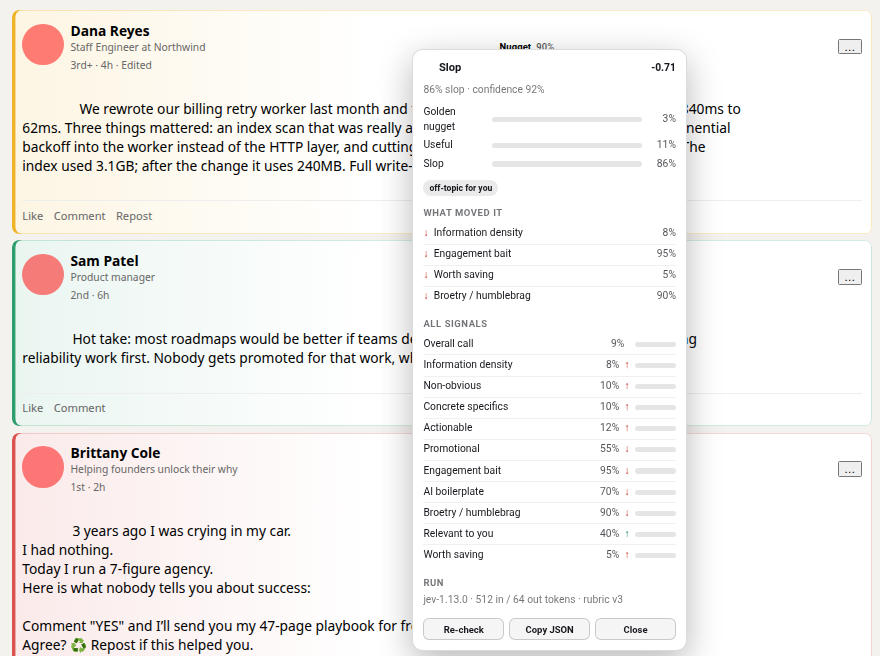
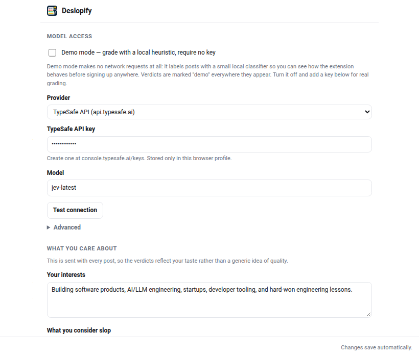

Your LinkedIn feed, graded as you scroll.
Deslopify labels every post a golden nugget, useful, or slop, and shows the reasoning behind each call. It runs in your browser, on your own API key.
For desktop Chrome, Edge, Brave, and Firefox — phone browsers and the LinkedIn app can't run extensions. Free and open source. No account, no analytics, no servers. No API key yet? Demo mode grades with a local heuristic and makes no network requests.
- Golden nugget
- Concrete, non-obvious, and relevant to you. The kind of post you would save or share.
- Useful
- Honest and on topic. Worth a skim, not a save.
- Slop
- Engagement bait, template filler, humblebrag theatre, or an ad with nothing to take away.
How a post gets its grade
-
Read
When a post settles on screen, Deslopify takes its text, its author, and whether it is promoted, suggested, or a repost. Nothing else on the page is read.
-
Ask
It asks TypeSafe's jev model eleven structured questions in one call: an overall verdict, an information-density score, and nine yes/no signals such as engagement bait and AI boilerplate.
-
Decide
Code, not the model, turns those answers into a verdict. The weights and thresholds live in the extension, so every signal is visible and every number is yours to change.
It shows its work
Click any badge to see the model's probability for each verdict, the signals that moved the score, the model that answered, and what the call cost in tokens.
Low-confidence verdicts are marked with a dashed edge rather than hidden, and every verdict is cached, so scrolling back through your feed costs nothing.

Tuned to you, not to an average
Describe your interests once, along with what you call slop and what you call a nugget. That profile is sent with every request, so verdicts reflect your taste.
- Raise or lower the bar for a golden nugget.
- Reweight how much promotion, engagement bait, or AI boilerplate counts against a post.
- Fade slop, collapse it behind a stub, or leave it alone.
- Cap characters sent per post and requests per minute.
- Point it at TypeSafe, Cloudflare Workers AI, or your own endpoint.

Install
Deslopify uses an API key from TypeSafe or a Cloudflare Workers AI token. You pay your provider directly, and grading a feed costs very little. To try it with no key at all, turn on demo mode in the popup.
Install it on a computer: Chrome, Edge, Brave, and Firefox on desktop all work. Phone browsers and the LinkedIn app can't run extensions, so if you're reading this on a phone, send yourself the link.
Chrome, Edge, Brave
- Download the Chrome zip from the latest release and unzip it.
- Open
chrome://extensionsand turn on Developer mode. - Choose Load unpacked and pick the unzipped folder.
- Open the popup, go to Settings, paste your key, and press Test connection.
- Reload your LinkedIn tab.
Firefox
- Download the Firefox zip from the latest release.
- Open
about:debugging#/runtime/this-firefoxand choose Load Temporary Add-on. - Pick the zip, add your key in Settings, and reload your LinkedIn tab.
Temporary add-ons are removed when Firefox quits. Running npm run sign:firefox from the
source produces a signed copy that stays installed. Needs Firefox 140 or newer.
Building from source: npm install && npm run build writes dist/chrome and
dist/firefox.